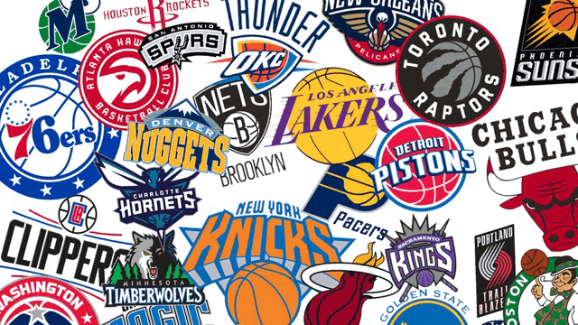
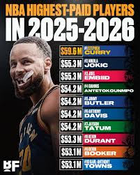
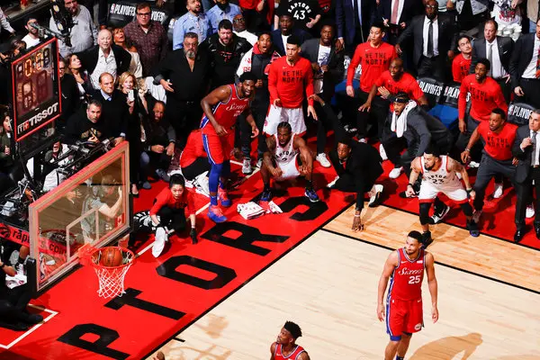
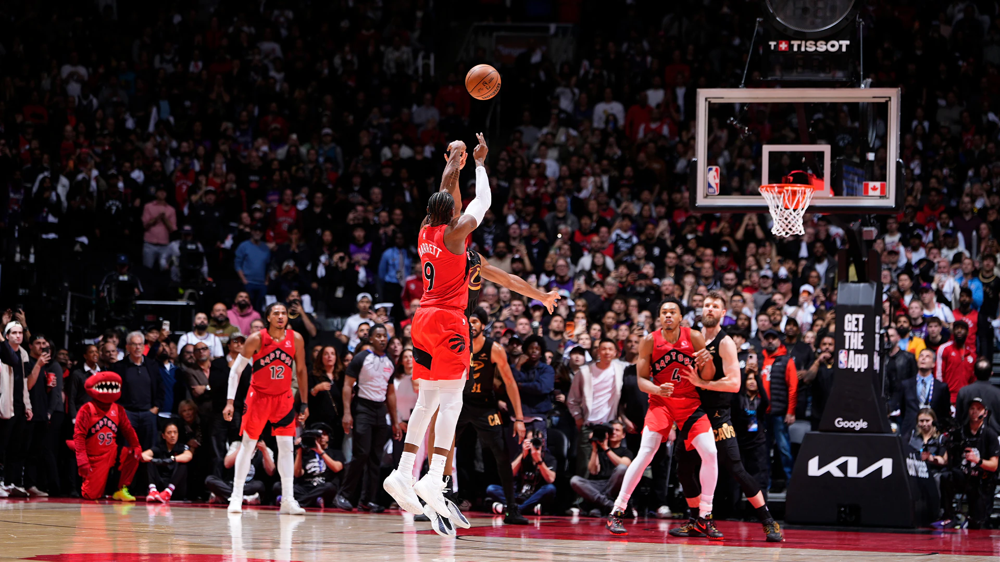
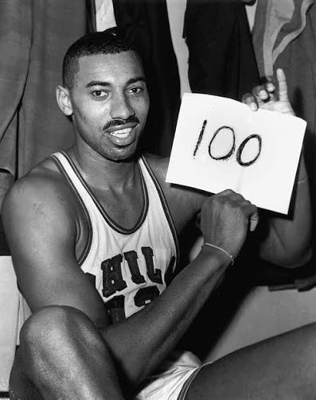
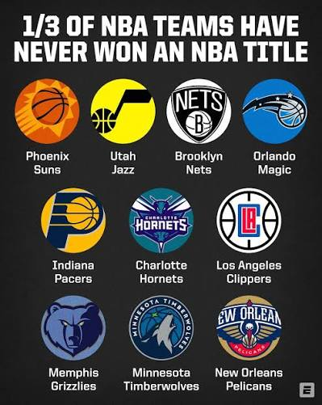
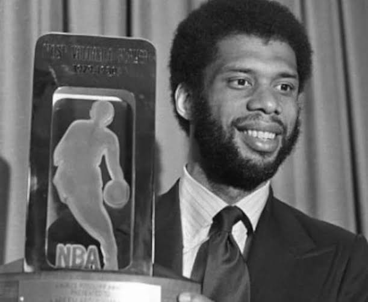
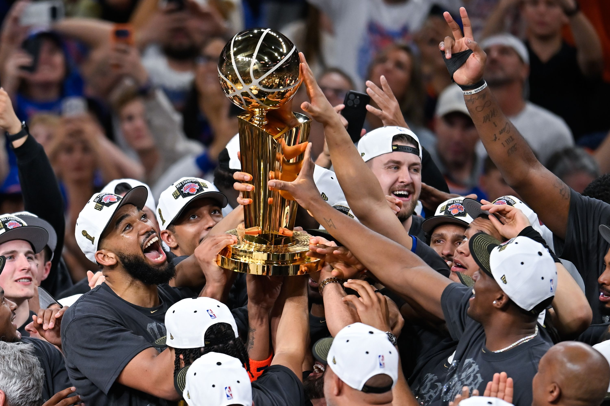

The NBA

is a "national" basketball league containing 30 basketball teams across the United States and Canada. The NBA, in total, has been around since the year 1949. In 1949, there was only 11 teams amongst the 30 teams there are currently. To include, the NBA will soon be expanding to the cities of Las Vegas and Seattle in approximately 2-5 years.Did you not know that the NBA

contains the highest paying salaries out of every other sport league worldwide, with an average salary being $10-$11 million and the high being $59.6 million, which is currently being earned by Stephen Curry from the Golden State Warriors. While the rookie minium for players is $1.1 to 1.27 million. If we adjust Micheal Jordan's salary during the 1997-98 Season with the Chicago Bulls, his $33,140,000 salary adjusts to approximately $60-62 million.
One of the most infamous shots of the NBA is the buzzer beater shot. This only happens when the basketball is directly shot right before the clock ends and is in the air after the clock ended (which still counts if it goes in). These type of shots can be severly important in close and intensive games.
The most famous buzzer

beat this 25-26 post-season had to be the RJ Barret shot in Toronoto. It was game 6 against Clevland, if the Raptors lost they would the series. The score is 110-109, the raptors are down, Scottie Barnes posts up and then passess to RJ who's wide open. RJ takes the shot where it bounces directly up on the back of the rim and than goes in. This won the game 112-110.Youtube Video of RJ Barret's shot
Each team plays 82 games.

On March 2, 1962, Wilt Chamberlain scored 100 points on 57% shooting (36/63). Wilt is the only player in NBA history to do this with close runner ups such as Bam's 83 or Kobe's 81 point games. If you think this record is false or incorrect, many would also believe with you, due to the lack of video proof
Youtube Video of Wilt Chamberlain's 100 point game (Radio Broadcast)
The Boston Celtics have 18 championships in total.


Kareem Abdul-Jabber with 6 MVPs.

The New York Knicks are the most recent NBA championships, winning this 25-26 season. The Knicks won in a 5 game stretch (4-1) against the San Antonio Spurs

Lebron James current sits at 43,440 points.
Current Leaderboard below
Web page created by Timmy K